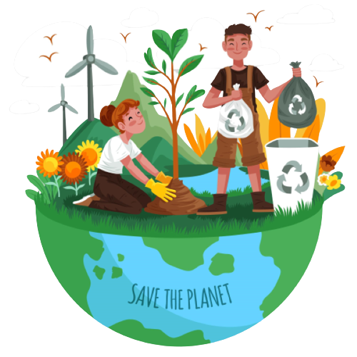
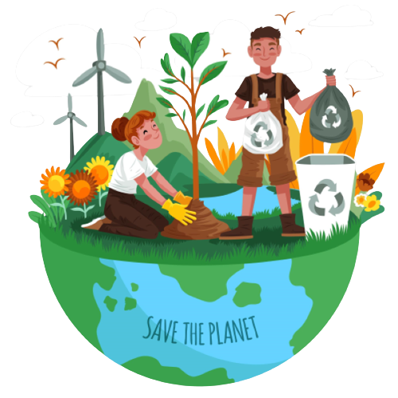

Menuju Indonesia Bebas Sampah
Tahukah Kamu ???
Data Sistem Informasi Pengelolaan Sampah Nasional (SIPSN) Kementerian Lingkungan Hidup dan Kehutanan (KLHK) tahun 2022 hasil input dari 202 kab/kota se Indonesia menyebut jumlah timbunan sampah nasional mencapai angka 21.1 juta ton. Dari total produksi sampah nasional tersebut, 65.71% (13.9 juta ton) dapat terkelola, sedangkan sisanya 34,29% (7,2 juta ton) belum terkelola dengan baik.
Berdasarkan jenisnya, mayoritas timbulan sampah nasional pada 2022 berupa sampah sisa makanan dengan proporsi 41,55%. Kemudian sampah plastik berada di urutan kedua dengan proporsi 18,55%.Sebanyak 13,27% sampah di Indonesia pada 2022 berupa kayu/ranting, 11,04% sampah kertas/karton, dan sampah logam 2,86%. Ada pula 2,54% sampah kain, sampah kaca 1,96%, sampah karet/kulit 1,68%, dan 6,55% sampah jenis lainnya.
Klik dibawah ini untuk melihat data pengelolaan sampah di Indonesia
Menuju Indonesia Bebas Sampah
Bagaimana Solusi Untuk Menangani Masalah Ini ???
Undang-Undang Nomor 18 Tahun 2008 tentang Pengelolaan Sampah, diperlukan pengurangan dan penanganan sampah khususnya untuk limbah dari rumah tangga. Pengurangan sampah yang dimaksud adalah pembatasan timbulan, pendauran ulang, dan pemanfaatan kembali sampah. Untuk penanganan sampah terdiri dari kegiatan pemilahan dan pemisahan sampah sesuai jenis, jumlah dan sifat, pengumpulan dan pemindahan sampah ke tempat penampungan atau pengolahan sampah, pengangkutan sampah, pengolahan sampah, serta pemrosesan akhir sampah dalam bentuk pengembalian sampah ke media lingkungan secara aman.
Pengelolaan sampah terpadu berbasis masyarakat selain berfungsi menjaga kelestarian lingkungan juga telah terbukti mampu mensejahtetakan masyarakat. Pengelolaan sampah secara terpadu tersebut diwujudkan dengan pengadaan program bank sampah. Program pengelolaan sampah tersebut terdapat pada berbagai program diantaranya komposting, daur ulang, kerja bakti, dan bank sampah. Bank sampah telah terbukti mampu meningkatkan peran masyarakat dalam mengelola sampah, menjaga kelestarian lingkungan, sekaligus meningkatkan taraf ekonomi melalui hasil pengolahan sampah. Kesimpulannya, pengelolaan sampah yang tepat untuk dapat diterapkan di Indonesia adalah pengelolaan sampah terpadu berbasis masyarakat. Pengelolaan sampah tersebut direncanakan, dijalankan, dikelola, dan dievaluasi oleh masyarakat, dengan dukungan dari pemerintah dan pihak terkait.
Bank sampah merupakan transit sampah sebelum nantinya sampah diolah berdasarkan jenisnya. Alur kerja bank sampah mirip seperti bank pada umumnya, namun yang membedakan adalah alat tukar yang digunakan. Pada bank sampah masyarakat menyetorkan sampah yang kemudian akan didata dan dicatat sebagai tabungan. Tabungan tersebut suatu saat dapat diambil berupa uang, sembako, pulsa listrik, atau air. Bank sampah menjadi program solutif pengelolaan sampah mandiri yang Kajian tentang Pengelolaan Sampah di Indonesia 7 terbukti mampu mengurangi volume sampah yang semakin bertambah (Anih S.S, 2014:82). Berdasarkan peneltian yang dilakukan oleh Rohmawati Dhina (2015:313), memperoleh hasil kesepakatan bahwa bank sampah merupakan alternatif solusi yang sukses mengurangi volume sampah. Kelestarian lingkungan dapat tercipta dan masyarakat mendapatkan keterampilan merupakan wujud kesuksesan bank sampah dalam sistem pengelolaan sampah (Firmansyah Adi dkk, 2016:190). Bank sampah memberikan manfaat lingkungan dari pelayanan masyarakat dalam pengelolaan sampah yang mampu mengubah pemikiran masyarakat terhadap sampah (Reba A.P dan Iif M.I, 2017:117).
 

CIRCULAR ECONOMY


Ekonomi sirkular adalah sebuah sistem atau model ekonomi yang bertujuan untuk menghasilkan pertumbuhan ekonomi dengan mempertahankan nilai produk, bahan, dan sumber daya dalam perekonomian selama mungkin, sehingga meminimalkan kerusakan sosial dan lingkungan yang disebabkan oleh pendekatan ekonomi linear (Ellen MacArthur, 2015).
Ekonomi sirkular merupakan model yang berupaya memperpanjang siklus hidup dari suatu produk, bahan baku, dan sumber daya yang ada agar dapat dipakai selama mungkin. Prinsip dari ekonomi sirkular mencakup pengurangan limbah dan polusi, menjaga produk dan material terpakai selama mungkin, dan meregenerasi sistem alam (Ellen Macarthur Foundation). Melalui ekonomi sirkular, kita bisa mencapai lebih banyak dengan menggunakan lebih sedikit.
Salah satu model ekonomi yang ditawarkan kepada dunia adalah model ekonomi sirkular, dimana dalam model ini barang yang sudah dikonsumsi dapat diolah kembali (Reduce, Reuse, Recycle, Replace, Repair). Sampah tersebut diproduksi ulang sehingga mengurangi dampak limbah buangan yang berbahaya bagi lingkungan dan dapat digunakan kembali sebagai produk baru atau sebagai bahan baku produk lain.
Salah satu implementasi dari ekonomi sirkular pada kalangan rumah tangga adalah program bank sampah. Masyarakat dapat berperan sebagai produsen dan kosumen dengan memproses dan mempergunakan sampah rumah tangganya masing-masing. Hasil pemilahan tersebut dapat dijual kepada pihak ke tiga atau digunakan untuk keperluan sehari-hari.
Pengelolaan limbah adalah salah satu bentuk implementasi ekonomi sirkular. Ellen MacArthur Foundation (2013:7), komunitas yang mempopulerkan ekonomi sirkular berpendapat bahwa inti dari ekonomi sirkular adalah; pertama, untuk mendesain limbah, produk-produk yang dikonsumsi dapat didaur ulang dan dijadikan sumber produksi kembali. Kedua, terpilahnya limbah jangka panjang dan jangka pendek. Ketiga, energi yang diperlukan pada sistem ini adalah energi hijau, sekaligus untuk mengurangi pemakaian sumber energi yang tidak dapat diperbaharui.
Dampak Sampah Bagi Kesehatan


Kurangnya kepedulian akan bahaya sampah dalam menularkan penyakit, masih memerlukan banyak sosialisasi dan edukasi masyarakat agar bijak dalam mengelola sampah. Sampah masih menjadi masalah yang cukup serius di negara kita.
Riset menunjukkan bahwa Indonesia termasuk salah satu negara penghasil sampah plastik terbesar di dunia. Indonesia berada di posisi ketiga sebagai negara penghasil sampah plastik di dunia. Terhitung pada tahun 2020, sampah plastik yang dihasilkan indonesia sebesar 67,8 ton atau terdapat 185.753 ton sampah plastik yang dihasilkan dari 270 juta penduduk setiap harinya. Maka dari itu, kesadaran dan tanggung jawab kita sebagai masyarakat Indonesia sangatlah diperlukan untuk selalu mengingat akan bahaya sampah plastik yang bisa mengancam kesehatan hingga berperilaku bijak dalam upaya mengurangi peningkatan jumlah sampah.
Sampah dan sisa makanan yang dibuang sembarangan dapat menimbulkan banyak bakteri dan parasit. Sampah berserakan di rumah atau di tanah membusuk akan menimbulkan banyak bakteri tumbuh di atasnya,terutama saat cuaca hangat dan lembab. Kemudian bakteri dan parasit akan menularkan berbagai penyakit bisa tersentuh oleh manusia.
Penyakit Penyakit Yang Ditimbulkan Oleh Sampah
Berikut adalah penyakit penyakit yang ditimbulkan oleh sampah :
| Nama Penyakit | Hewan Pembawa | Penyebab Penyakit |
|---|---|---|
| Dysenteriterie basillaris | Lalat | Shigella shegae |
| Dysenteriterie amoebica | Lalat | Entamoeba histolytica |
| Typhus abdominalis | Lalat | Salmonella typhi |
| Cholera | Lalat | Vibrio cholera |
| Ascariasis | Lalat | A.Lumbricoides |
| Ancylostomiasis | Lalat | A.duodenale |
| Pest | Tikus | Pasteurella pestis |
| Leptospirosis | Tikus | Pasteurella pestis |
| Icterohaemorrhagica | Tikus | Leptospira icterohaemorrhagica |
| Rat bite fever | Tikus | Streptobacillus moniliformis |
CHOLERA
Penyakit cholera disebabkan oleh Vibrio cholera, dikatakan berasal dari India tetapi pernah terdapat di seluruh dunia. Cholera adalah penyakit usus halus yang akut dan berat, sering mewabah yang mengakibatkan banyak kematian. Masa tunasnya berkisar antara beberapa jam sampai beberapa hari. Gejala utamanya adalah muntaber, dehidrasi, dan kolaps dapat terjadi dengan cepat. Sedangkan gejala cholera yang khas adalah tinja yang menyerupai air cucian beras,tetapi sangat jarang ditemui, sehingga cholera klasik jarang didapat. Namun demikian keganasan cholera tidak menjadi berkurang karenanya ; orang dewasa dapat meninggal dalam waktu setengah sampai dua jam, disebabkan dehidrasi.
Thyphus Abdominalis
Sama dengan cholera, thypus juga merupakan penyakit yang menyerang usus halus. Penyebabnya adalah Salmonella typhi, terdapat di seluruh dunia, dengan reservoir manusia pula. Beda dengan cholera, angka kematianThypus berkisar antara 10 % sebelum penemuan antibiotika dan menurun sampai 2%-3% setelahnya. Gejala utama adalah panas yang terus menerus dengan taraf kesadaran yang menurun, terjadi 1-3 minggu (rata-rata 2 minggu) setelah infeksi. Kasus thypus yang tidak spesifik juga banyak ditemui,terutama diantara anak anak penularan dapat terjadi dari orang ke orang, atau tidak langsung dari makanan, minuman yang terkontaminasi bakteri. Sama halnya dengan cholera, orang sudah banyak tahu tentang segi kedokteran serta pencegahannya, tetapi di Negara kita ini wabah masih sering dijumpai
Dysentierie Amobea
Dysenterei amoeba disebut juga amoebasis disebabkan oleh E.histolyyica,suatu protozoa. Penyakit ini didapat di seluruh dunia dalam bentuk endemie. Gejala utamanya adalah tinja yang tercampur darah dan lender. Berbeda dari Dysenterie basillaris, dysentirie ini tidak menyebabkan dehidrasi. Penyakit ini sering pula ditemukan dengan gejala yang nyata, sehingga seringkali menadi khronis. Tetapi apabila tidak diobati dapat menimbulkan berbagai komplikasi, seperti abses hati, radang otak, dan perforasi usus
Leptospirosis
Leptospirosis adalah penyakit yang disebabkan oleh bakteri Leptospira. Bakteri ini dapat menyebar melalui urine atau darah hewan yang terinfeksi. Beberapa hewan yang tergolong sebagai perantara penyebaran leptospirosis adalah tikus, sapi, anjing, dan babi. Gejala pada leptospirosis mirip dengan gejala penyakit flu, tetapi lebih berat serta disertai dengan bengkak di kaki dan tangan, serta kulit menjadi kuning. Jika tidak diobati dengan tepat, leptospirosis dapat menyebabkan kerusakan organ dalam, bahkan mengancam nyawa.